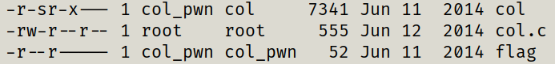

{
Daddy told me about cool MD5 hash collision today.
I wanna do something like that too!
ssh col@pwnable.kr -p2222 (pw:guest)
}
similar to fd, we get to a folder where we can look at the source code of col
and execute col as col_pwn

examining the code and solution:
at the main() function, user input is taken through argv[1], which must consist of 20 bytes (20 char's)
the if statement checks if the hashcode equals to messege digest of our input, if equals, the flag will be captured.
understanding how this digest works consists of understanding of pointers, pointer casting and how pointers are read.